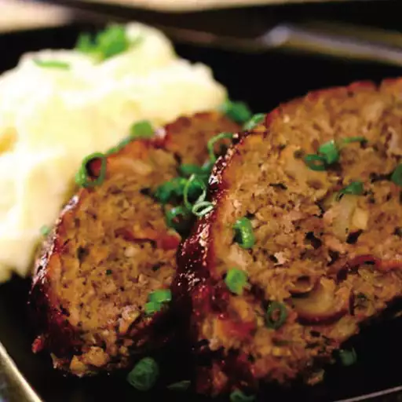

Air Fryer Meatloaf

Discover the Irresistible Air Fryer Meatloaf
Air Fryer Meatloaf is a delightful twist on the classic comfort food, offering a quicker and healthier alternative to traditional oven-baked recipes. This savory dish combines seasoned ground meat, breadcrumbs, and a medley of herbs, shaped into a perfect loaf. The air fryer not only cooks the meatloaf to juicy perfection but also creates a crispy exterior that adds a delightful texture to each bite.
What sets this recipe apart is the efficient cooking method of the air fryer, which reduces cooking time while preserving the moistness of the meat. The result is a flavorful and well-textured meatloaf that will satisfy your cravings in a fraction of the time. Serve it alongside your favorite sides for a wholesome meal that's both delicious and effortlessly prepared.
Air Fryer Meatloaf Ingredients
These are the ingredients you’ll need to make this air fryer meatloaf recipe:
- 1 pound lean ground beef
- 1 small onion, finely chopped
- 1 large egg, lightly beaten
- 3 tablespoons dry bread crumbs
- 1 tablespoon chopped fresh thyme
- 1 teaspoon salt
- ground black pepper to taste
- 2 mushrooms, thickly sliced
- 1 tablespoon olive oil, or as needed
Steps to Make Air Fry Meatloaf?
- Preheat an air fryer to 392 degrees F (200 degrees C).
- Combine ground beef, onion, bread crumbs, thyme, egg, salt, and pepper in a bowl. Knead and mix thoroughly. Transfer mixture to a small loaf pan. Smooth the top, press in mushrooms, and coat with olive oil.
- Roast meatloaf in the preheated air fryer until nicely browned, about 25 minutes. An instant-read thermometer inserted into the center should read at least 165 degrees F (72 degrees C).
- Let meatloaf rest at least 10 minutes before slicing into wedges and serving.